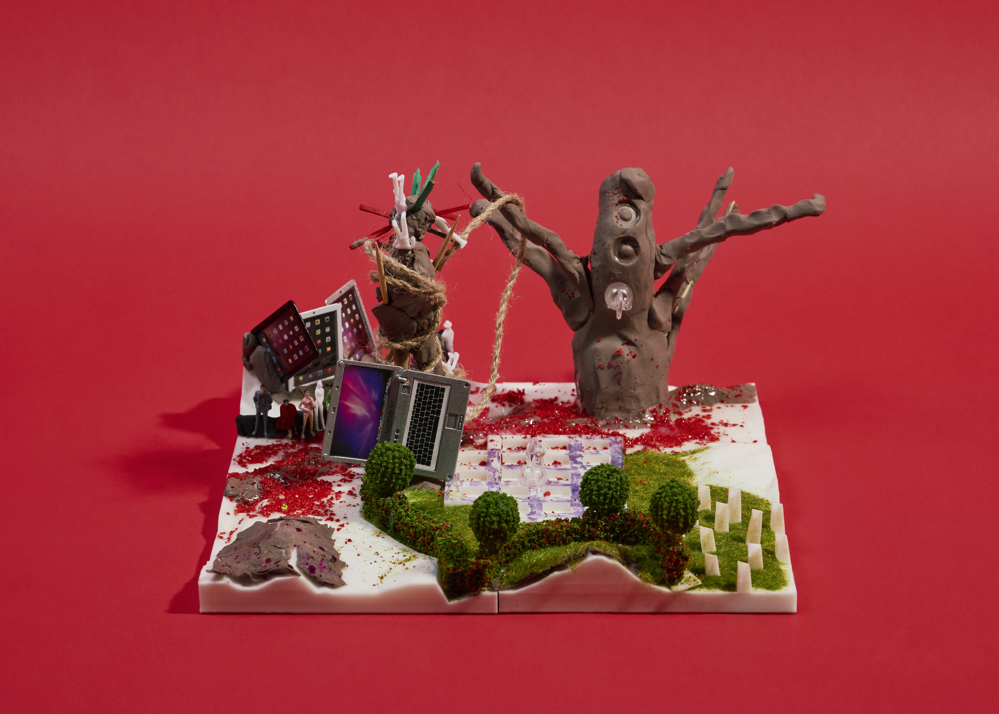
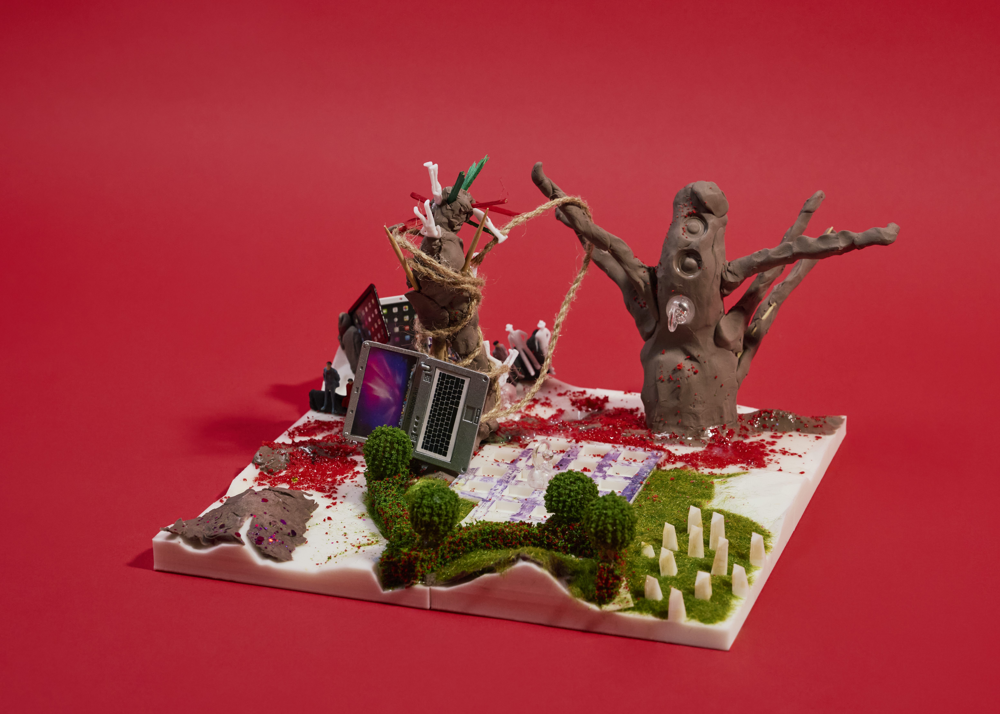

제5구역: 리미널 디펜스 에이전시(LDA)
지구인 분석 결과
● 지구인의 특징:
1. 식민주의적 본능
2. 침략 본능(생존을 위한 필요가 아니라, "할 수 있기 때문에" 서로를 살생하는 기술을 발전시켜온 역사)
3. 속도 중심의 사고방식
4. 행동 예측 가능성
● 기술:
1. 문화 기반 기술(골든 레코드 등 기술과 문화 공존 / 가치관)
2. 상호 살생 기술(공격, 방어 수단)
3. 공감 능력 기술, AI 활용 : 감정적 공감 능력을 역이용하거나 침해하려는 시도에 대응하는 AI 방어 기술
● 지구인이 가져올 최초의 기술:
1. 자원 수집·생성 기술: 화성 도착 초기 단계에 가져오는 기초 기술로, 산소 전환 기술 등 생존 인프라를 구축하기 위한 기술 필요
2. 농사 기술
화성인으로서의 입장
● 전제 및 기본 입장
1. 상황 정의: 지구인의 침공 형태에 따른 맞춤형 방어 전략 수립 필요
2. 지구인의 상황: 핵전쟁으로 피폐해진 상태. 전쟁 기술은 극도로 발달했으나 공멸의 성향을 띠는 종족. 극한의 온도와 인간적 고독에 매우 취약함
3. 화성인의 입장: 완전한 공존은 불가하나 일방적 몰살도 불가능함. 방어와 심리전을 통해 공격 의지를 꺾어 스스로 다른 대안을 찾도록 유도하는 것이 핵심 목표
● 지구인 침공 경로 및 행동 예측
침투 목적: 절박한 생존 및 정착이 목적이므로, 무조건적 파괴보다는 기존 거주민 축출이나 외교적 지분 확보를 시도할 것임
예상 경로: 우주선 착륙을 위한 평탄한 토지가 필요하므로, 텅 빈 사막 지대인 '6구역'에 전초기지를 세우고 외곽부터 점령해 들어올 확률이 높음. 5구역으로의 즉각적인 직공 가능성은 낮음
외교 및 억지력 확보: 지구인의 전투력을 감안하여 외교적 접근(예: 서희의 담판) 병행. '전면전 시 공멸'이라는 메시지와 압도적 격차를 각인시켜 타협을 압박함
전략명: "리미널 결계" (Liminal Barrier) / 정신감응 공포 방어선
● 화성인은 물리적 방벽 대신, 텔레파시 능력을 활용한 심리적 공포 유도 전략으로 5구역을 방어한다. 지구인의 압도적인 전쟁 기술에 정면으로 맞서는 대신, "싸울 의지 자체를 상실시키는" 방식을 택한다.
1. 격차 가시화: 6구역이 지구인의 전초기지가 될 것이라는 전제 하에, 5구역 진입 전 단계에서부터 지구인에게 "이해할 수 없는 무언가"를 보여준다. 정면 대결이 아니라 기술과 존재의 격차를 각인시켜 공격 의지 자체를 꺾는 게 목적이다.
2. 리미널 스페이스화: 인간은 고독과 텅 빈 공간에 취약하다는 특성을 역이용한다. 화성인의 텔레파시로 지구인 병사들이 서로를 인지하지 못하는 것처럼 느끼게 만들어 텅 빈 사막·협곡을 실제보다 훨씬 더 고립되고 광막한 공간으로 체감하게 한다. 물리적으로는 동료가 옆에 있어도, 정신적으로는 혼자라고 느끼는 상태가 된다.
3. 크리처 배치: 모래와 수정(화성의 토착 물질)을 활용해 만든 형체불명의 크리처를 결계 지점에 배치. 실체가 명확하지 않은 존재이기 때문에 "물리적으로 제거 가능한 적"이 아니라 정체를 알 수 없는 위협으로 인식되며, 이는 지구인의 전쟁 기술(명확한 타겟에 최적화된)을 무력화시키는 효과를 낸다.
4. 던전 디펜스형 방어 구조: 5구역은 정해진 경로와 협곡 지형(운하가 얼어있어 방어에 유리)을 활용해, 지구인이 진입할수록 점점 더 심리적 압박이 강해지는 단계적 공포 유도 구조로 설계한다. 정면 방어선이 아니라, 진입 자체가 손실이 되는 구조이다.
● 전략의 목적
- 지구인을 완전히 파괴하거나 몰살시키는 것이 목표가 아님
- 목적은 "이 구역을 차지하는 비용이 너무 크다"고 지구인 스스로 판단하게 만드는 것
- 즉, 물리적 승리가 아니라 심리적 철수 유도가 최종 목표
곡 제목: 붉은 운하의 율법 (The Law of the Red Canal)
재를 묻히고 온 자들이여,
너희의 파멸을 이곳의 붉은 흙에 심지 말라.
우리는 기원전부터 엮여 온 하나의 거대한 정신.
분열된 너희의 투창은
결코 우리의 사유를 뚫지 못하리라.
오, 빛나는 수정의 파수꾼들이여.
어리석은 연소의 역사를 반복하려는 자들에게
압도적인 고요의 형벌을 내리소서.
우리는 영원히 얼어붙은 운하의 율법.
살생의 도구를 거두고,
이 거룩하고 기괴한 평화 앞에 엎드려 침묵하라.
공멸의 불꽃을 끄고,
경이의 심연으로 물러나라.
물러나라...